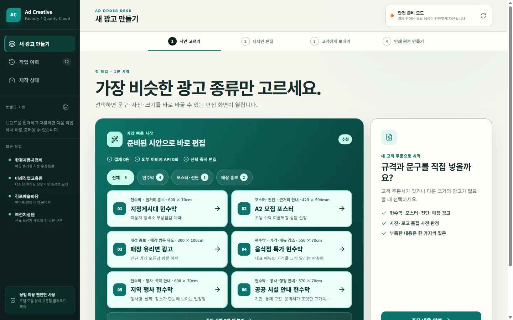
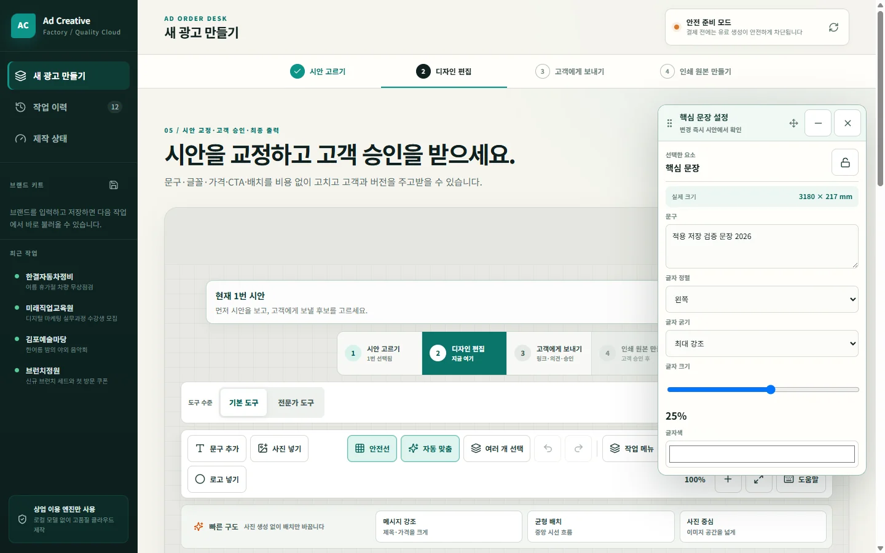
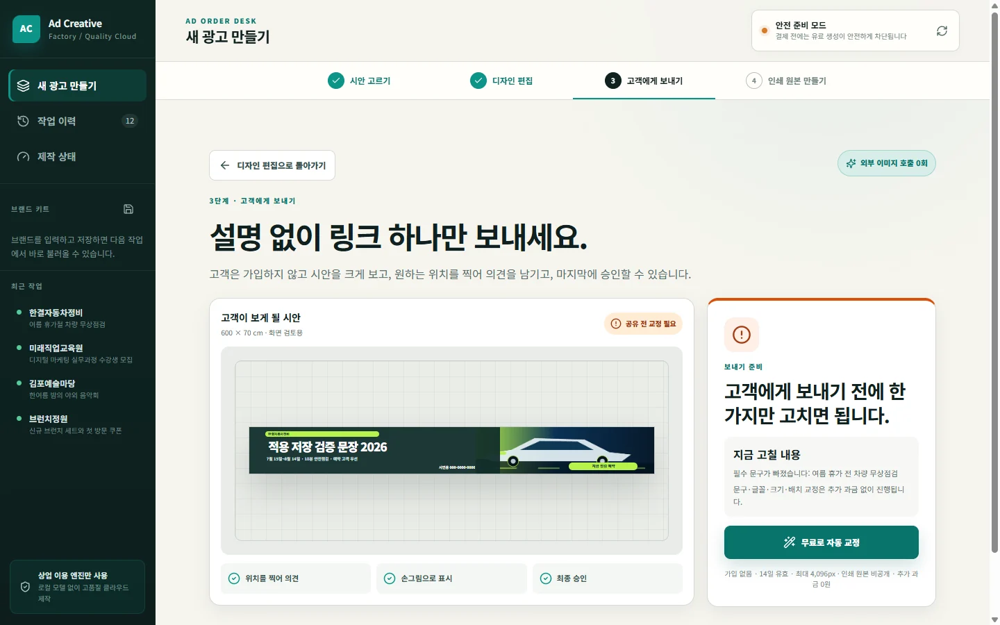
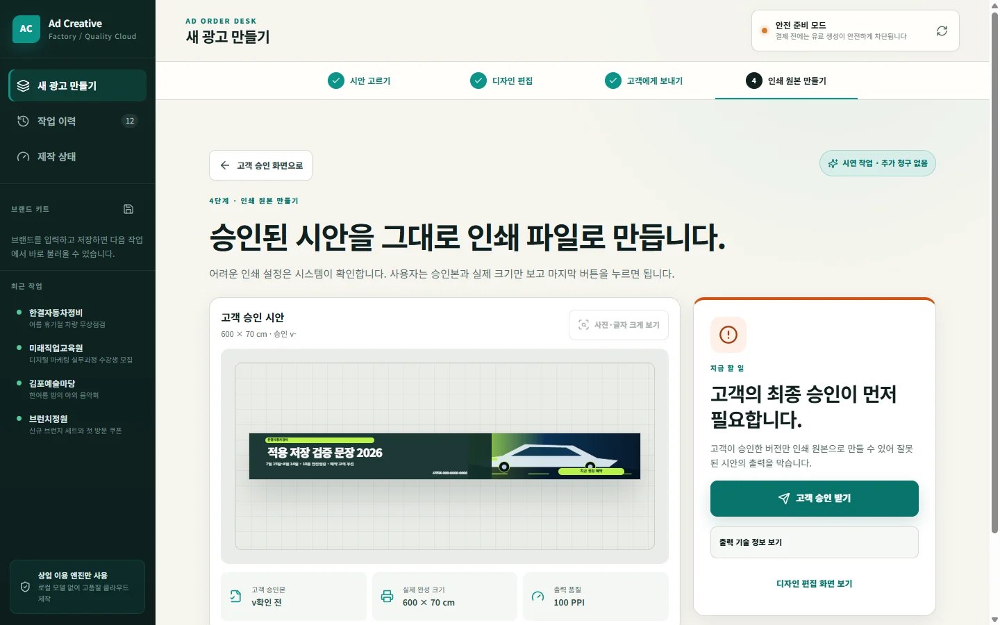

Step 01 · Order Desk
가장 비슷한 광고부터 고릅니다.
현수막, 포스터, 전단, 매장 홍보물 등 실제 제작 규격을 먼저 선택하고 준비된 시안에서 빠르게 시작합니다.
- 광고 종류별 실제 규격
- 준비 시안 또는 직접 주문
- 브랜드 자료 재사용
광고홍보물공장은 광고업자의 실무 흐름을 한 작업실로 연결하는 제작 시스템입니다. 현재 포털에서는 실제 제작이나 결제 없이 핵심 화면과 작업 방식만 소개합니다.

현수막, 포스터, 전단, 매장 홍보물 등 실제 제작 규격을 먼저 선택하고 준비된 시안에서 빠르게 시작합니다.

문구, 글꼴, 가격, 연락처와 배치는 새 이미지를 만들지 않고 반복 수정합니다. 필요한 요소만 골라 정확하게 교정합니다.

별도 설명 없이 시안을 크게 보고 원하는 위치에 의견을 남깁니다. 수정이 끝난 버전만 최종 승인할 수 있습니다.

고객 승인 이후 실제 규격과 출력 품질을 확인합니다. 필수 문구와 이미지 해상도가 기준에 맞는지 점검하는 마지막 단계입니다.